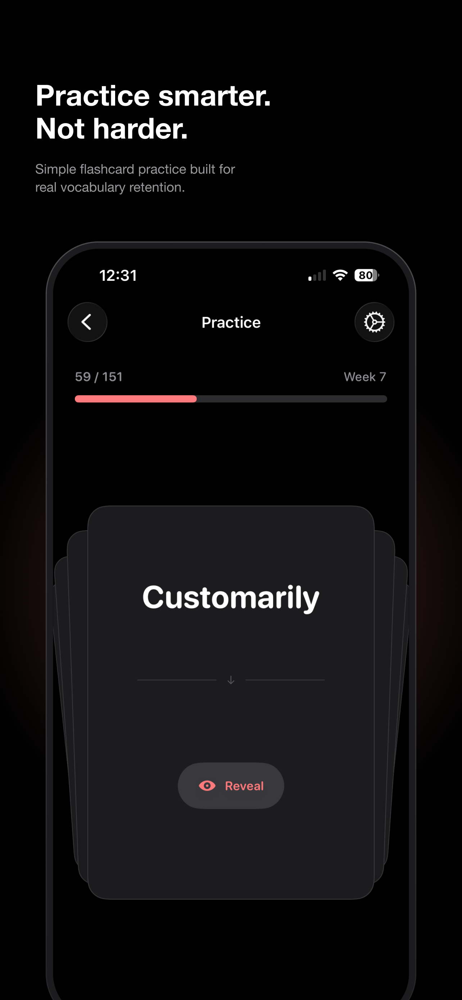
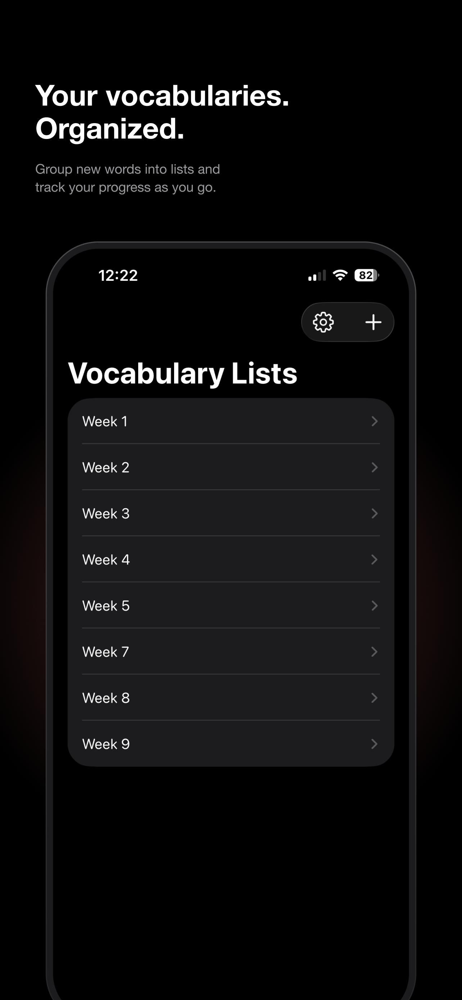
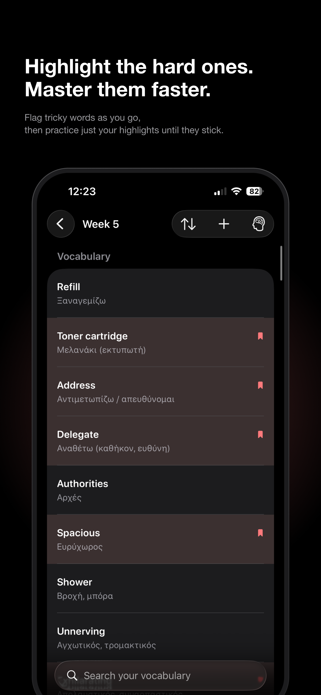
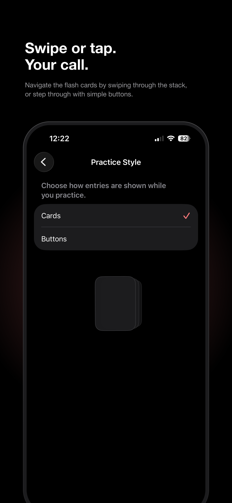
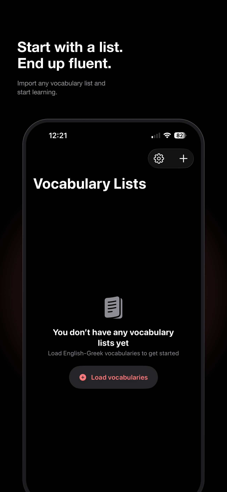

Vocabulary
Practice smarter.
Not harder.
A simple, on-device flashcard app for building real bilingual vocabulary retention — no account, no sync, no ads.





What Vocabulary does
Vocabulary helps you learn new words with simple flashcard practice, built around a few focused ideas:
- Organize words into lists (by week, topic, or however you like) and import them from a CSV file, or add entries by hand.
- Flag the entries you find difficult and practice just your highlights until they stick.
- Choose how cards are shown during practice — swipe through a stack, or step through with buttons.
- Control how often the original word vs. the translation is hidden, with an optional auto-reveal.
- Everything is stored on your device. There's no account and nothing is uploaded anywhere.
Need help?
If something isn't working, or you just have a question about the app, email me directly and I'll get back to you personally.
I read every message myself and try to reply within a couple of days.
Frequently asked questions
How do I add words to a vocabulary list?
Open a list and tap the + button to add a single entry, or import a CSV file with many entries at once from the same menu.
What CSV format does Vocabulary expect for imports?
Each row needs two comma-separated columns: the original word first, then its translation, for example:
Refill,Ξαναγεμίζω
A header row is optional — if your first line contains "source" or "translated" it's automatically skipped. Fields containing commas can be wrapped in quotes.
Is there a limit to how many words I can store?
Each vocabulary list can hold up to 5,000 entries, and the app supports up to 50,000 entries in total across all your lists. If an import would go over either limit, you'll see a message telling you how many free slots are left.
How do I flag words I find difficult?
Swipe or tap the bookmark icon on an entry inside a list to highlight it. You can then filter or practice just your highlighted words until they stop giving you trouble.
Can I change how flashcards are practiced?
Yes — go to Settings → Practice Style and choose between Cards (swipe through a stack) or Buttons (step through with taps).
Does Vocabulary need an internet connection or an account?
No. Vocabulary works fully offline and doesn't require signing in. All of your lists and progress live only on your device.
How do I change the app's language?
Vocabulary follows your iPhone's language setting (currently available in English and Greek). Go to Settings → Language inside the app — this opens the iOS Settings app, where you can change the language for Vocabulary under its entry.
Troubleshooting
My CSV import fails with a formatting error
Make sure every row has at least two columns separated by a comma — the word and its translation. Rows with only one column, or empty fields, will be rejected. If a word itself contains a comma, wrap that field in double quotes.
I got a message saying I've reached a word limit
You've hit either the 5,000-entry limit for a single list or the 50,000-entry limit across the whole app. Try importing into a new list, or remove entries you no longer need to free up space.
Still stuck after checking the FAQ above? Email me and I'll help you sort it out.